Task-first home
Start work without setup fatigue
The home screen keeps tasks front and center while preserving a one-click quick-start option for students who want to begin immediately.
Pudding is a desktop focus companion that helps students start work, stay engaged, and recover from distractions without punishment-based productivity patterns.
Many students already feel pressure when they sit down to study. Instead of adding stricter timers, blockers, or guilt-heavy streak mechanics, Pudding makes focus feel more supportive through a task-first flow, lightweight progress tracking, and a companion that nudges users back without shame.
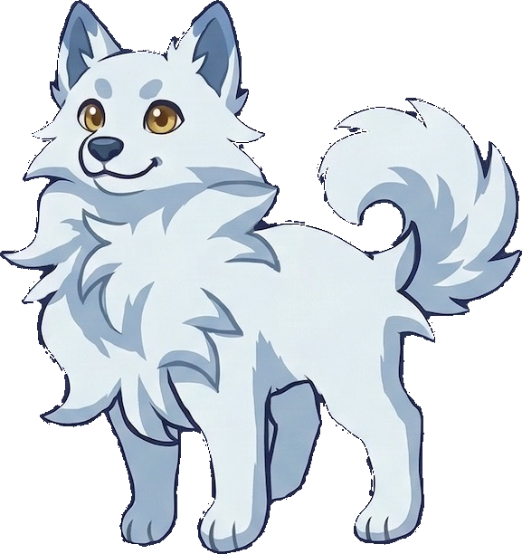
The interface keeps the product visible from the first glance, then quickly moves into the core study flow, reflection, and progress tracking.
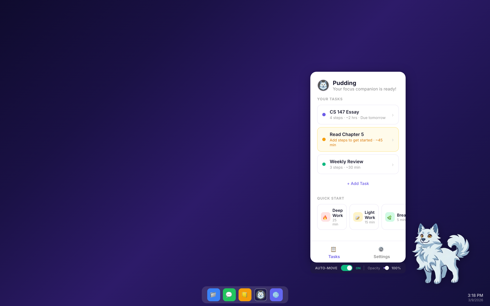
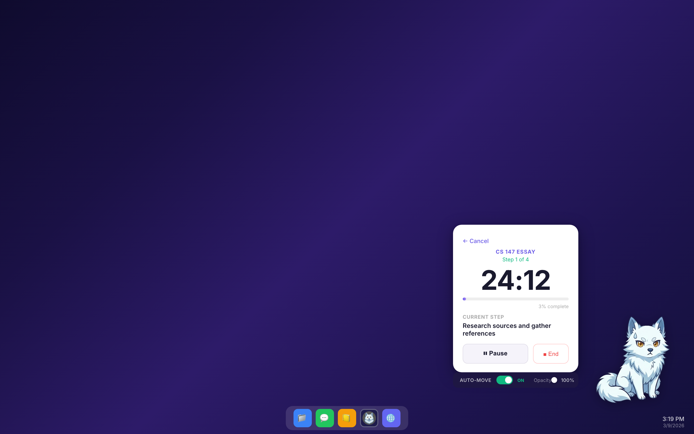
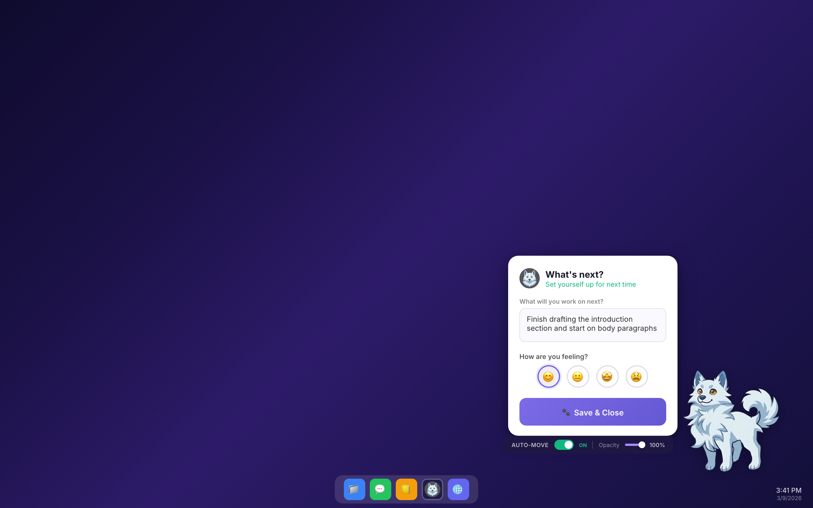
Required linked deliverables spanning research, prototyping, presentation, and final reporting.
Core user tasks centered on starting work, staying engaged, and completing or recovering from a session.
Interactive prototype refined using heuristic evaluation feedback and later testing.
Structured so classmates, instructors, and employers can scan the project without extra context.
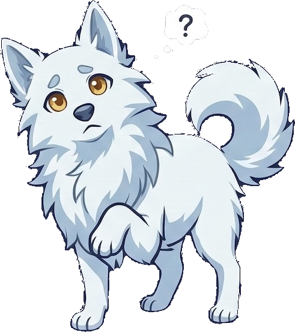
Pudding reframes studying as a supportive experience rather than a punishing one. Here's the problem we identified, our approach, and what the final prototype delivers.
Students often struggle to stay focused in distraction-heavy environments. Existing tools can feel punitive: rigid timers, blockers, and pressure-heavy workflows create even more stress around studying.
Pudding reframes studying as a more supportive experience through a desktop companion, clear step-based tasks, low-friction quick start options, and emotionally lighter recovery states.
The final prototype emphasizes fast startup, visible progress, and graceful re-entry after distraction so users can return to work without feeling punished for losing momentum.
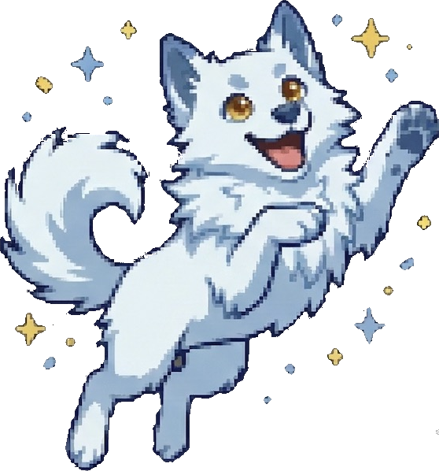
Key screens that show how Pudding helps students start work, stay engaged, and reflect on progress without guilt.
The home screen keeps tasks front and center while preserving a one-click quick-start option for students who want to begin immediately.
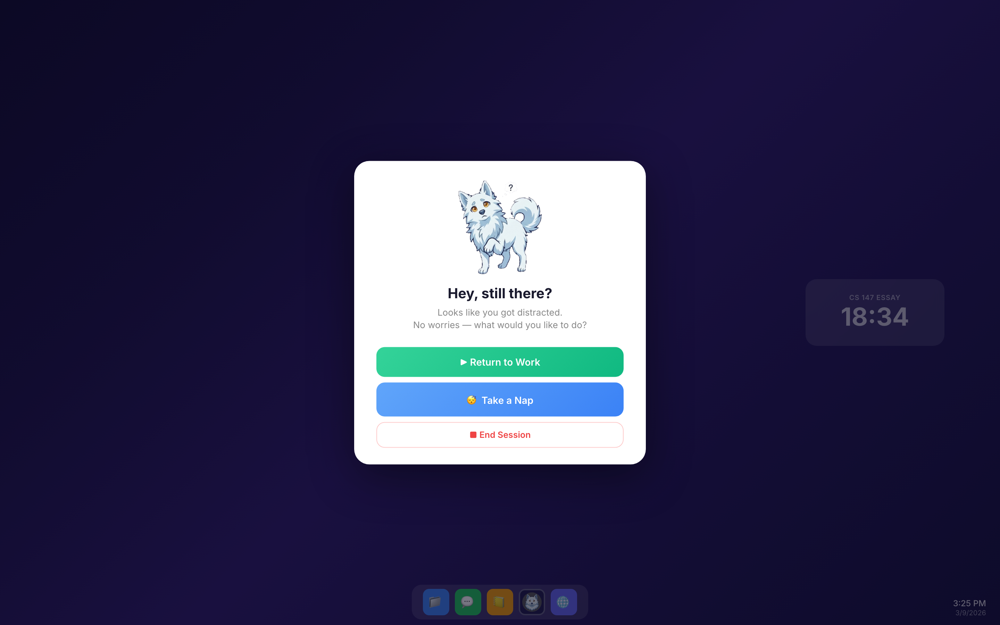
When users drift away, Pudding checks in with low-pressure options that make it easy to resume, pause, or end the session without shame.
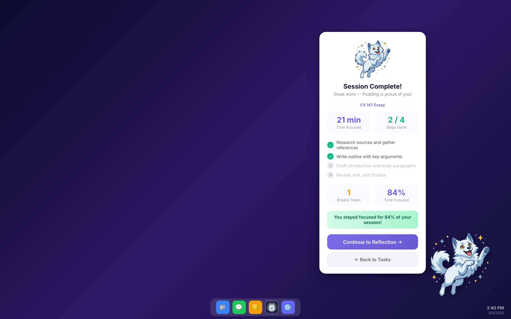
Session summaries and reflection screens clarify what happened, what remains, and what the next step should be when the user comes back.
Pudding was developed by a three-person team with responsibilities spanning research, synthesis, prototyping, evaluation, and final presentation.
Led interface design, visual structure, prototyping work, and contributed to the final website presentation.
Led user research, synthesis, design opportunity framing, and the rationale behind the product direction.
Supported ideation, experience prototyping, evaluation, and iteration based on testing and heuristic feedback.
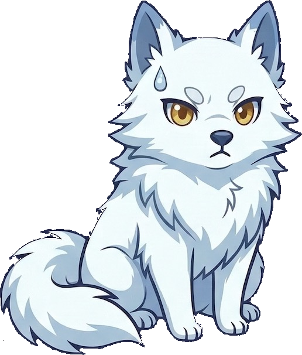
The three primary tasks connect the final interface to the needs uncovered through user research and validated through prototype iteration.
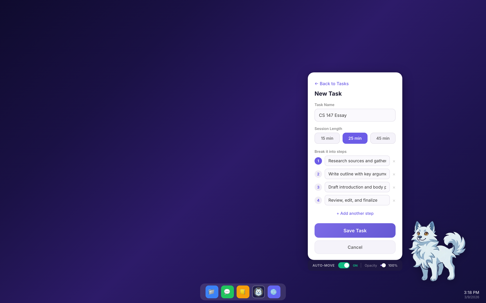
Users can begin quickly through quick start or by creating a task with manageable steps. Reducing startup friction is the first requirement for any sustainable focus tool.
During a session, the companion provides lightweight encouragement, progress visibility, and current-step context instead of aggressive interruption or punishment.
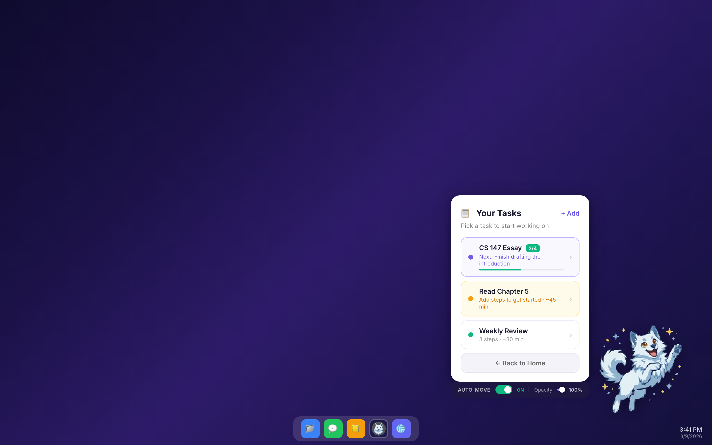
After a session, users review progress, capture the next step, and return to an updated task list that preserves momentum instead of resetting it.
Watch the concept and demo videos, explore the interactive Figma prototype, and access the final presentation materials.
Introduces the original problem framing and the early design direction behind Pudding.
The final interactive prototype demonstrates the polished task flow, companion behavior, and end-of-session reflection loop.
Demo video (embedded below), pitch slides, script, poster, and all GR9 materials are also in the shared Drive folder.
The complete written report documenting our design process from needfinding through high-fidelity prototyping, including reflections and lessons learned.
All required CS185 deliverables across the quarter, with direct links to the relevant slides, prototype, video, or document.
Initial interviews, research insights, and early understanding of the problem space.
Synthesis of user insights, point-of-view statements, and early ideation directions.
This website presents the project story, embedded media, downloadable files, and links to the final artifacts.
Introduces the design concept and the user problem the team set out to solve.
Sketches, low-fidelity prototypes, and usability testing insights.
Interactive medium-fidelity prototype exploring the main task flow and interface structure.
Final interactive prototype after design iteration and refinement.
Final presentation materials including the pitch deck, poster, demo video, and pitch script.
Cumulative report documenting the full design process, project evolution, and reflections.